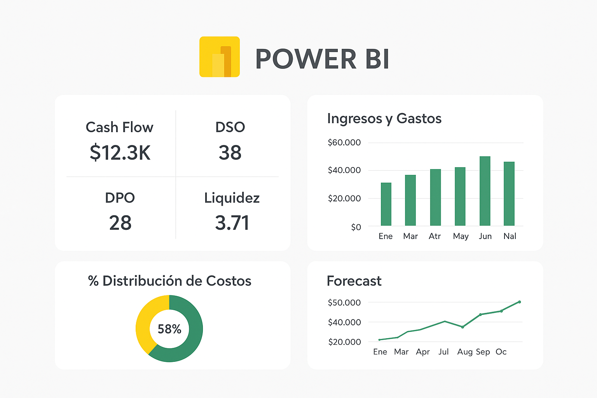
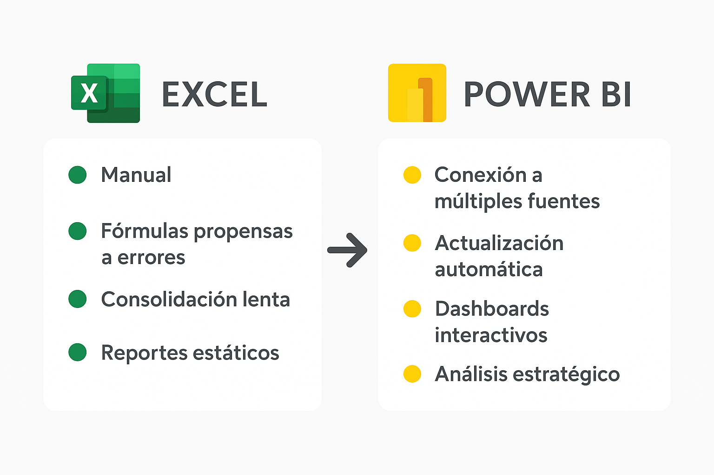

Introducción
¿Cuántas veces un reporte en Excel se dañó por una fórmula mal arrastrada? Ese tipo de situaciones ha impulsado a muchas áreas financieras y de proyectos a buscar herramientas más robustas. Durante años, Excel fue el pilar del análisis: flexible, familiar y versátil. Sin embargo, su dependencia de procesos manuales y su dificultad para manejar grandes volúmenes de datos lo hacen cada vez menos competitivo frente a los retos actuales.
En este contexto surge Power BI, una plataforma que no solo complementa a Excel, sino que lleva el análisis financiero a un nivel estratégico.
El salto hacia Power BI
La transición de Excel a Power BI no significa abandonar Excel, sino potenciarlo con un enfoque más ágil y estratégico.
- Conectar múltiples fuentes de información: ERP, bancos, sistemas internos y hasta archivos planos.
- Automatizar procesos repetitivos: evitando consolidaciones manuales y reduciendo errores.
- Actualizar en tiempo real: garantizando reportes siempre vigentes.
- Construir dashboards interactivos: que permiten explorar los datos con un clic.
Caso práctico: del cuello de botella a la agilidad
En mi experiencia, un flujo de caja consolidado que antes se armaba en dos días con Excel, en Power BI se actualiza automáticamente en minutos, integrando bancos y ERP sin intervención manual. Esto no solo ahorra tiempo, sino que libera al equipo financiero para enfocarse en análisis y no en tareas operativas.
Impacto en Finanzas y Proyectos
El paso hacia Power BI trae beneficios tangibles:
- Eficiencia operativa: reportes listos en minutos en lugar de horas o días.
- Confiabilidad: menor riesgo de errores humanos en fórmulas o consolidaciones.
- Visión estratégica: dashboards con KPIs como cash flow, DSO, DPO, liquidez, ROI de proyectos o forecast accuracy.
- Mejor comunicación: visualizaciones claras que facilitan transmitir información a la gerencia y otras áreas.
Conclusión ejecutiva
La evolución hacia Power BI no es reemplazar Excel, sino complementarlo. Excel sigue siendo valioso para análisis rápidos, pero Power BI convierte a las áreas financieras en socios estratégicos del negocio.
Hoy, el profesional financiero ya no se limita a generar reportes: su verdadero rol es transformar datos en decisiones. Y en ese salto, Power BI se convierte en un aliado clave para impulsar la competitividad y la sostenibilidad empresarial.
